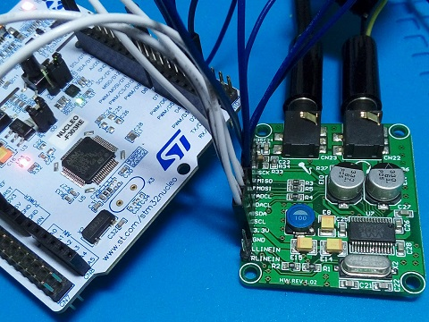
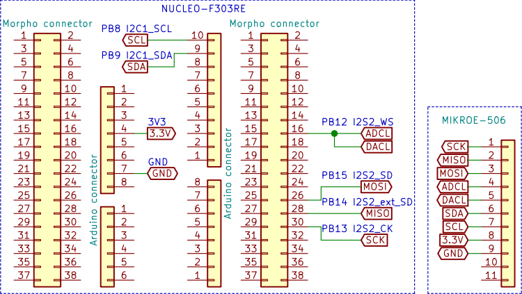
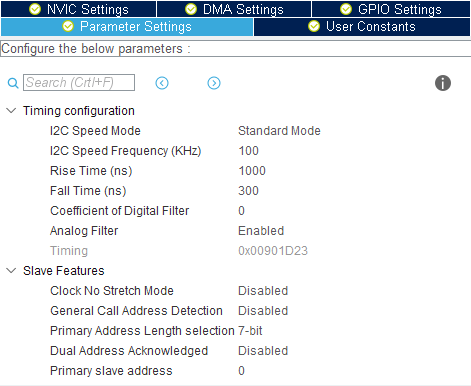
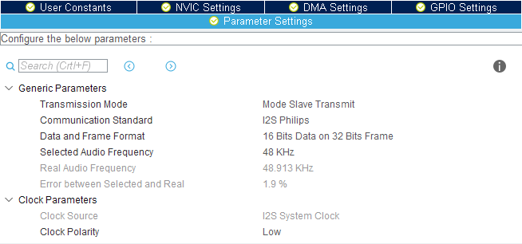
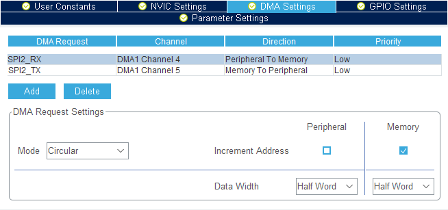

STM32 NucleoボードとオーディオコーデックICとの通信
2019年01月12日 カテゴリー：STM32

高品質なアナログデジタルコンバータ(ADC)とデジタルアナログコンバータ(DAC)が搭載されたオーディオコーデックと呼ばれるICがあります。デジタル信号処理をする場合はこのICを使いこなすことが必要です。ほとんどのオーディオコーデックはI2C（Inter-Integrated Circuit）とI2S(Inter-IC Sound)という通信方式を使うことが可能です。
今回はWM8731というICが搭載されたAUDIO CODEC Board（MIKROE-506）を使用します。I2C通信によりデータフォーマット等の設定を行い、I2S通信でオーディオデータを送受信します。今回もADCのときと同様DMAを使いました。
Nucleoボード（NUCLEO-F303RE）とMIKROE-506との接続は下図の通りです。

MIKROE-506はC23を1nF→2.2uFへ変更し、R34は取り外しています。特に必須な改造ではありませんが、C23を大きな値に変更しないと音量がかなり下がってしまうと思われます。MISO等の表記はMIKROE-506上の表記に合わせました。
＜STM32CubeMX（5.0.0） Pinout & Configurationタブ＞
左側列のConnectivity→I2C1を開く
・中央列上側 Mode
I2C : I2C
・中央列下側 Configuration→Parameter Settingsタブ

Rise Time (ns) : 1000
Fall Time (ns) : 300
※STM32F303がマスター（送信側）、WM8731がスレーブ（受信側）
・右側列 IC画像
ピン位置を変更
(61)-PB8 : I2C1_SCL
(62)-PB9 : I2C1_SDA
左側列のMultimedia→I2S2を開く
・中央列上側 Mode
Mode : Full-Duplex Slave ※STM32F303がスレーブ（受信側）、WM8731がマスター（送信側）
・中央列下側 Configuration→Parameter Settingsタブ

Data and Frame Format : 16 Bits Data on 32 Bits Frame
Selected Audio Frequency : 48KHz
・中央列下側 Configuration→DMA Settingsタブ

Addボタンで2行追加する
DMA Request : SPI2_RX
Mode : Circular
Data Width (Peripheral) : Half Word
Data Width (Memory) : Half Word
DMA Request : SPI2_TX
Mode : Circular
Data Width (Peripheral) : Half Word
Data Width (Memory) : Half Word
＜TrueSTUDIO（9.1.0）＞
main.cに2箇所追加記載する
/* USER CODE BEGIN 0 */の下 I2Cで送信するデータ、I2Sで受信するデータを定義
uint8_t DevAddr = 0b00110100;
uint8_t pdccAddr = 0b00001100 ; //Power Down Control
uint8_t pdccData[1] = {0b00000000};
uint8_t daifAddr = 0b00001110 ; //Digital Audio Interface Format
uint8_t daifData[1] = {0b01000010}; //48kHz 16bit I2S Master Mode
uint8_t aapcAddr = 0b00001000 ; //Analog Audio Path Control
uint8_t aapcData[1] = {0b00010100};
uint8_t dapcAddr = 0b00001010 ; //Digital Audio Path Control
uint8_t dapcData[1] = {0b00000000};
uint8_t aaccAddr = 0b00010010 ; //Active Control
uint8_t aaccData[1] = {0b00000001};
uint16_t RX_BUFFER[24] = {};
/* USER CODE BEGIN 2 */の下 データを送受信
HAL_I2C_Mem_Write(&hi2c1,DevAddr,pdccAddr,1,(uint8_t*)pdccData,1,1000);
HAL_I2C_Mem_Write(&hi2c1,DevAddr,daifAddr,1,(uint8_t*)daifData,1,1000);
HAL_I2C_Mem_Write(&hi2c1,DevAddr,aapcAddr,1,(uint8_t*)aapcData,1,1000);
HAL_I2C_Mem_Write(&hi2c1,DevAddr,dapcAddr,1,(uint8_t*)dapcData,1,1000);
HAL_I2C_Mem_Write(&hi2c1,DevAddr,aaccAddr,1,(uint8_t*)aaccData,1,1000);
HAL_I2SEx_TransmitReceive_DMA(&hi2s2,(uint16_t*)RX_BUFFER,(uint16_t*)RX_BUFFER,24);
・I2C
HAL_I2C_Mem_Writeという関数を使い、データを2進数で8桁（8ビット）ずつ、3つのデータを送ります。
1つ目…WM8731のアドレス7桁(0011010)と0→DevAddr
2つ目…設定先アドレス7桁と設定データ1桁
3つ目…設定データ8桁
「0b」がついているのは2進数という意味です（「0x」は16進数）。個別の設定データの詳細はWM8731のデータシートを参照してください。※音量に関する設定はデフォルトのままなので、マイク入力への音は約5倍増幅されます。
・I2S
HAL_I2SEx_TransmitReceive_DMAという関数により、データ送信と受信を同時に行います。バッファデータサイズはテストしやすいようにとりあえず24としました。今回は受信データと送信データに同一の配列を用いているので、マイク入力への音とヘッドフォン出力からの音が同じになるはずです（※音量注意）。波形が乱れる場合は、Nucleoボード上の黒いスイッチでリセットするとうまくいく場合があります。I2Sはもう一つ利用することが可能（I2S3）なので、そちらを接続し受信（Mode Slave Receive）に設定した場合は、データ送信と受信を分けることができます。
＜参考ページ＞
I2Cモジュールの使い方 - 電子工作の実験室
SPI/I2C シリアル通信 - Crescent